Gallery / Judaica & Decor
Judaica & Decor
Rabbis, Shabbat tables, mezuzot, hamsas and wall pieces with a Jewish sense of humor.
 2 views
2 views
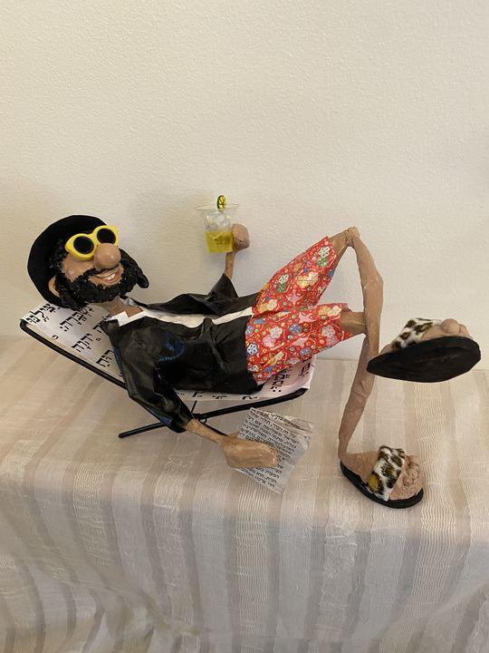
2 views
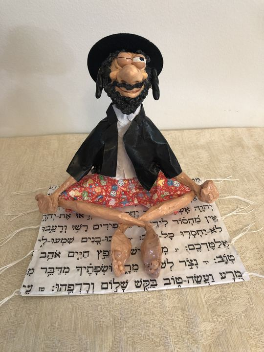

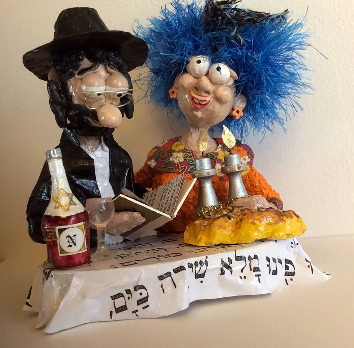


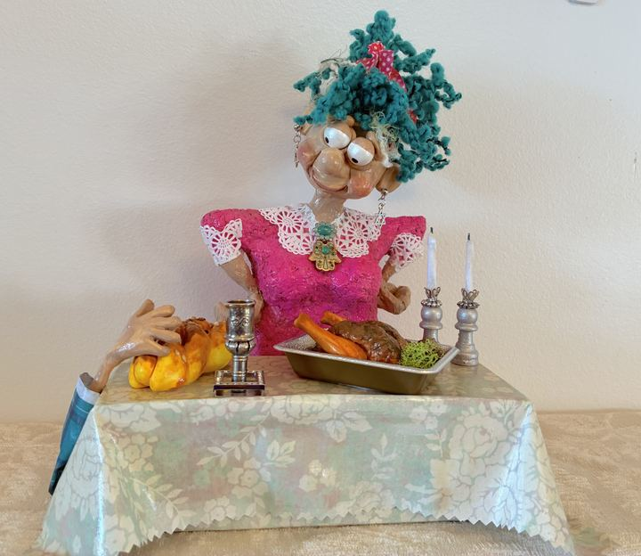

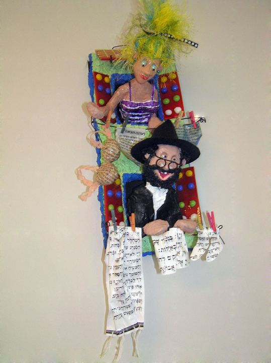

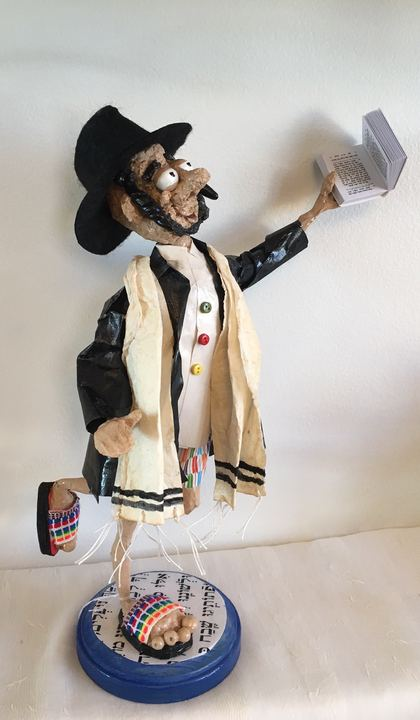

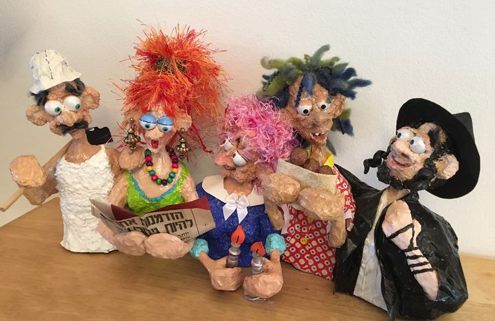

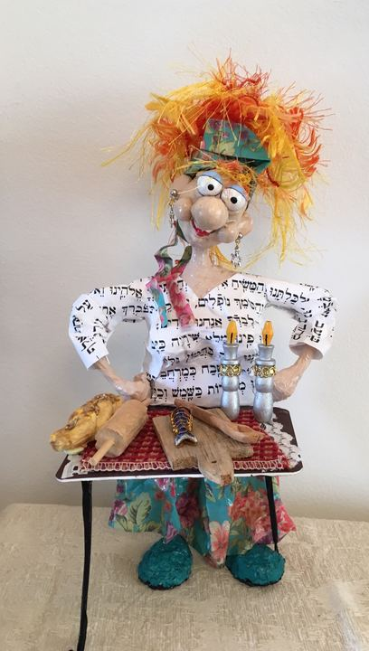
2 views

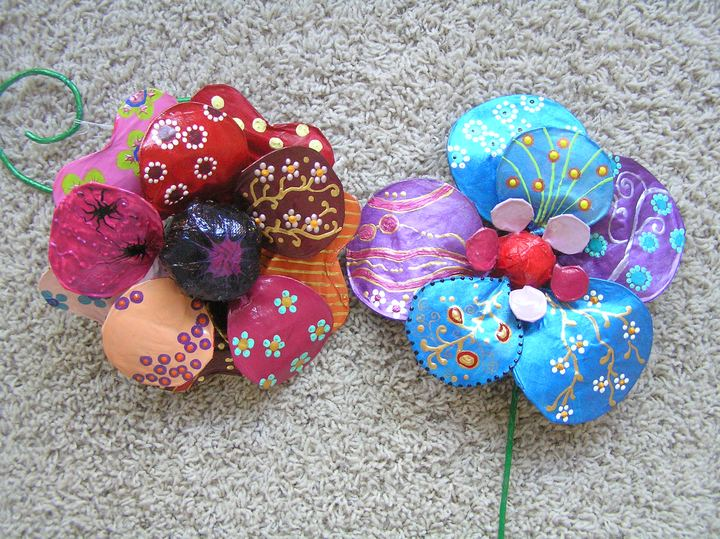

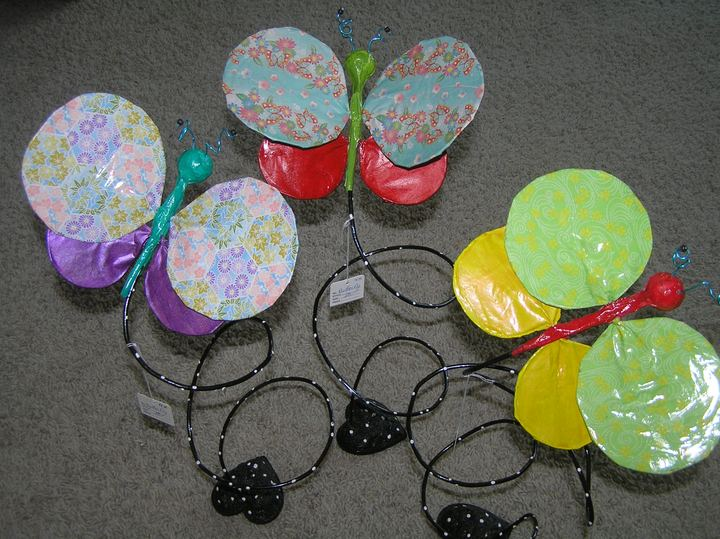

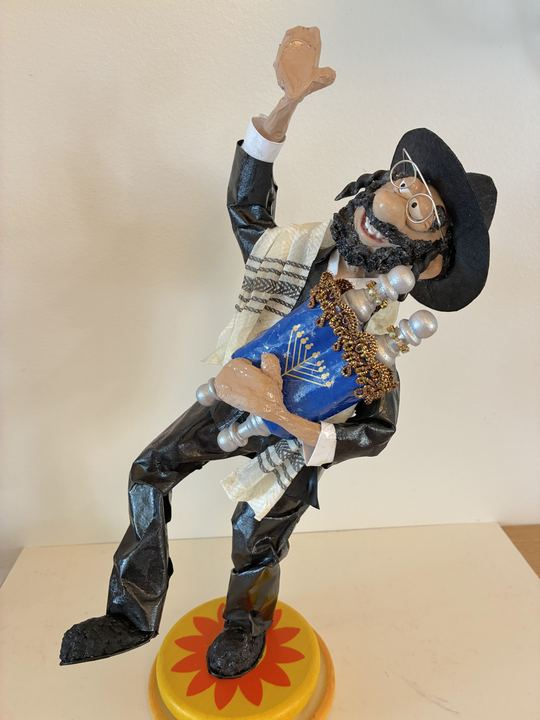

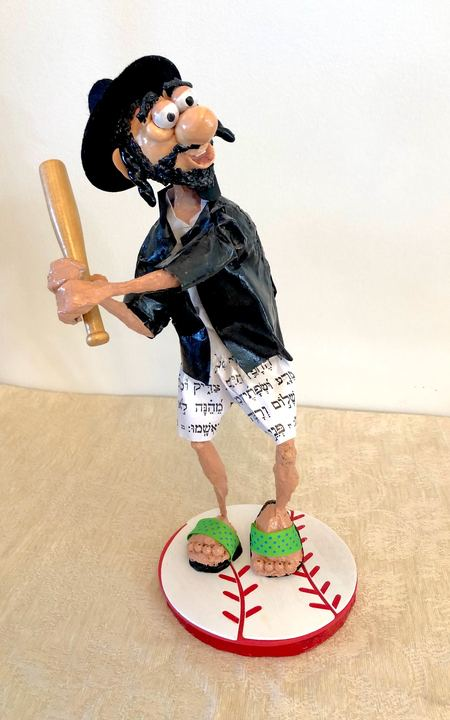

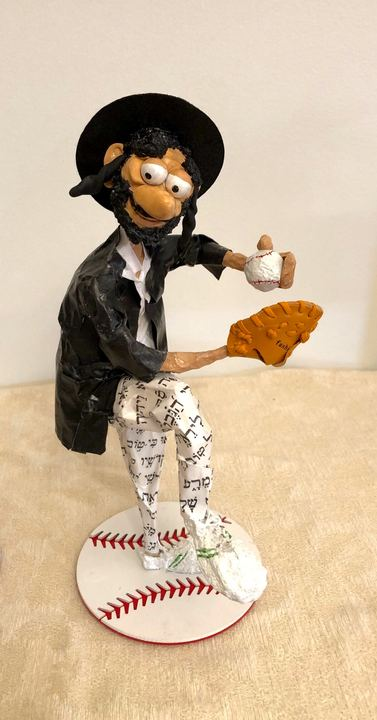

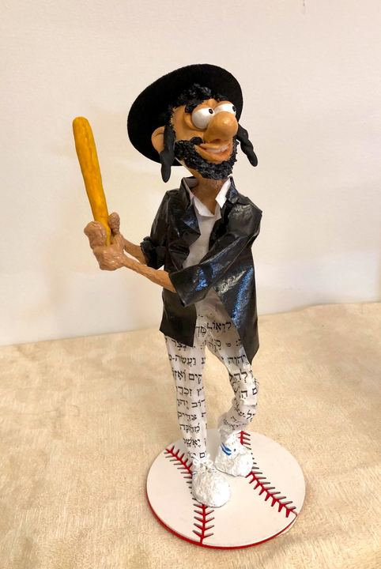


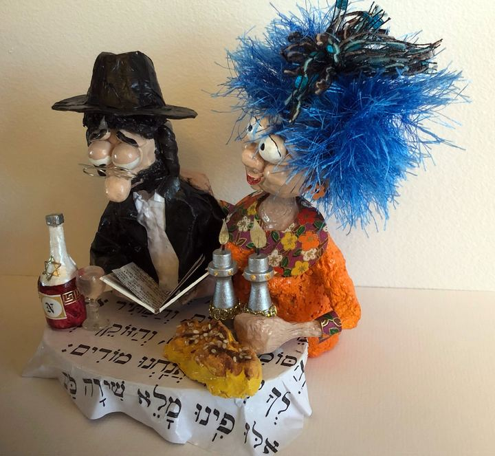

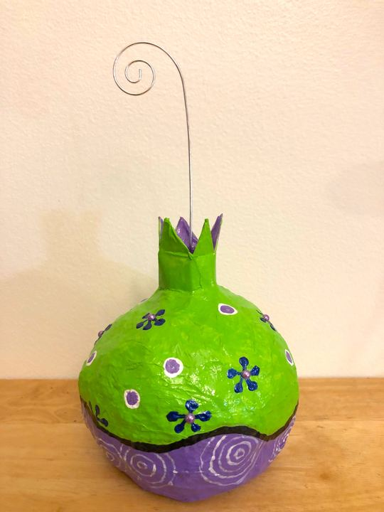
Love one of these? Most pieces are one-of-a-kind, but I’m happy to create something similar just for you.
Ask about a commission